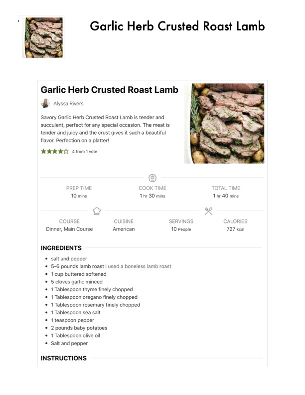

Garlic Herb Crusted Roast Lamb

Original cookbook page 185
Savory Garlic Herb Crusted Roast Lamb is tender and succulent, perfect for any special occasion. The meat is tender and juicy and the crust gives it such a beautiful flavor. Perfection on a platter!
Prep: 10 minutes • Cook: 1½-2 hours • Total: 2 hours 10 minutes
Ingredients
- 5-6 pounds lamb roast (boneless lamb roast)
- Salt and pepper for seasoning
- 1 cup butter, softened
- 5 cloves garlic, minced
- 1 tablespoon thyme, finely chopped
- 1 tablespoon oregano, finely chopped
- 1 tablespoon rosemary, finely chopped
- 1 tablespoon sea salt
- 1 teaspoon pepper
- 2 pounds baby potatoes
- 1 tablespoon olive oil
- Additional salt and pepper for potatoes
Instructions
- Preheat oven to 400°F. Salt and pepper the lamb and set in the roasting dish.
- In a small bowl mix butter, garlic, thyme, oregano, rosemary, salt and pepper. Rub all of the butter mixture on the outside of your lamb.
- In a roasting dish add the potatoes and toss with olive oil and salt and pepper. Lay the lamb roast on top of the potatoes.
- Roast in the oven until the internal temperature reaches 145°F. About 1½–2 hours.
- Remove the twine and serve.
📝 Recipe Notes
Recipe by Alyssa Rivers from therecipecritic.com/roast-lamb/. Rating: 4 out of 5 stars. Perfect for special occasions! Per serving: 727 kcal, 55g fat (23g saturated), 17g carbs, 40g protein, 166mg cholesterol, 838mg sodium, 902mg potassium, 2g fiber, 1g sugar. Combined recipe from pages 185-186.
Recipe #185 from collection